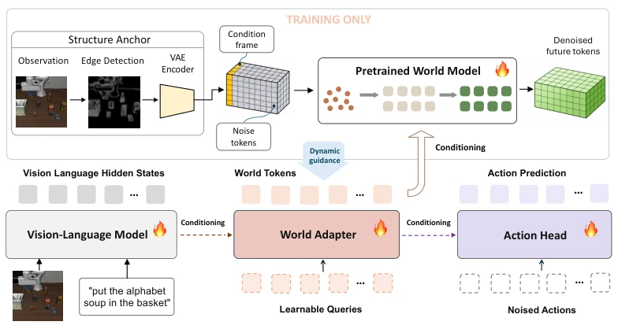

This paper employs a 'train-time world model, deploy-time stealth' trick. World Tokens distill the dynamic supervision capability of the video world model into a set of fixed tokens, discarding the video branch directly at deployment and retaining only the VLA architecture. The benefit is that inference speed hardly lags behind (61ms vs 56ms), the drawback is that training costs double, and it relies on 'primitive methods' like Canny edge maps to prevent the video branch from slacking off. Although it topped the LIBERO leaderboard, the 16% win rate improvement on real robots feels like adding a 'dynamic premonition' cheat to VLA, rather than a true world model. However, this 'extracting the essence without dregs' design indeed solves the pain point of slow WAM inference, it remains to be verified by more long-horizon tasks whether the gradient path during training can truly perfectly align with action representations.
研究动机Motivation
VLA 模型（如 OpenVLA, Kim et al., 2025b）擅长闭环控制，但缺乏物理场景演化的显式建模，导致长程任务容易出错。现有的 World-Action Models (WAMs)（如 Motus, Bi et al., 2026; Cosmos Policy, Kim et al., 2026）虽然引入了视频预测，但推理时需保留大模型，延迟高（610ms）。作者想解决的是：如何既利用世界模型的动态监督，又不增加部署时的计算负担？现有方法要么并行分支导致策略忽略监督（VLA-JEPA, Sun et al., 2026），要么保留视频骨干（Fast-WAM, Yuan et al., 2026），无法彻底解耦。
VLA models (e.g., OpenVLA, Kim et al., 2025b) excel at closed-loop control but lack explicit modeling of physical scene evolution, leading to errors in long-horizon tasks. Existing World-Action Models (WAMs) (e.g., Motus, Bi et al., 2026; Cosmos Policy, Kim et al., 2026) introduce video prediction, but require retaining large models during inference, resulting in high latency (610ms). The authors aim to solve: how to utilize the dynamic supervision of world models without increasing computational burden at deployment? Existing methods either have parallel branches causing the policy to ignore supervision (VLA-JEPA, Sun et al., 2026), or retain the video backbone (Fast-WAM, Yuan et al., 2026), failing to fully decouple.

Figure 2: Training architecture. Given multi-view observations and language, the VLM produces multimodal features that the World Adapter maps into a fixed set of world tokens 𝑞𝑡. These tokens condition a jointly fine-tuned video denoiser (top) and a flow-matching action expert (bottom right). A Canny edge map of the primary view, encoded as a first-frame latent, supplies appearance-suppressed spatial structure to the video branch. At deployment, the video tokenizer, denoiser, structural anchor, and future targets are removed; the VLM, World Adapter, and action expert remain.
方法Method
核心是 World Adapter。VLM 输出特征后，通过 Adapter 压缩为 256 个 World Tokens。训练时，这些 tokens 同时作为 Action Expert 的输入和 Video Denoiser 的条件。Video Denoiser 使用 Canny 边缘图作为首帧结构锚点，防止其依赖外观。Action Expert 只能访问 World Tokens，形成“独占路由”。部署时，Video Denoiser 及相关组件被移除，仅保留 VLM + Adapter + Action Head。这种设计强制动作策略学习动态表征，而非静态视觉特征。
The core is the World Adapter. After VLM outputs features, they are compressed into 256 World Tokens via the Adapter. During training, these tokens serve as input for the Action Expert and condition for the Video Denoiser simultaneously. The Video Denoiser uses Canny edge maps as first-frame structural anchors to prevent reliance on appearance. The Action Expert can only access World Tokens, forming an 'exclusive routing'. During deployment, the Video Denoiser and related components are removed, retaining only VLM + Adapter + Action Head. This design forces the action policy to learn dynamic representations, rather than static visual features.
Achieves 98.2% average success rate on LIBERO, outperforming StarVLA and World2Act. On the SIMPLER dataset, both WidowX and Google Robot achieve the best results. Real robot R1 Pro task success rate improves from 59.4% to 76.0%. Ablation studies show that exclusive routing and learned query are key, allowing VLM bypass leads to performance degradation instead. Latency tests show parity with pi0.5.